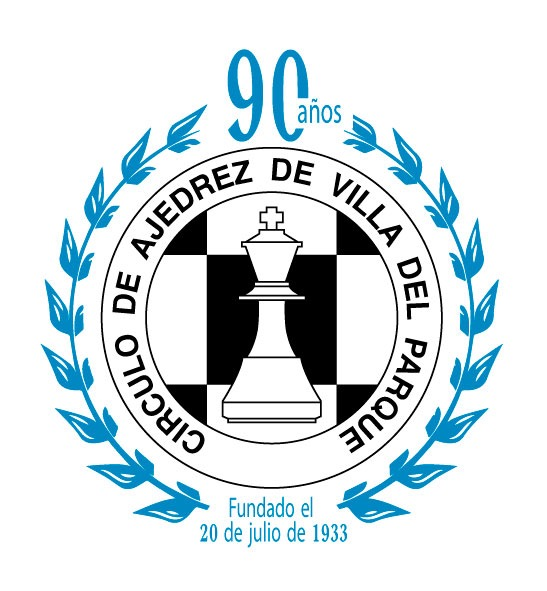
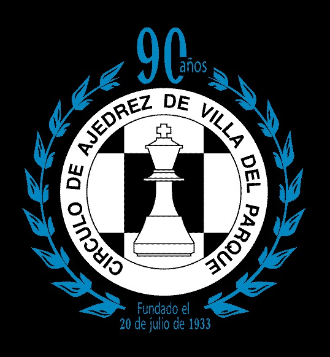

Circulo de Ajedrez de Villa del Parque

|  | Circulo de Ajedrez de Villa del Parque |
|
Club de Ajedrez de Villa del Parque |
 |
|---|
El Circulo de Ajedrez de Villa del Parque (C.A.V.P.), se fundó el 20 de julio de 1933.
De esta institución, han surgido grandes exponentes del ajedrez argentino, como el MI
Jorge Rubinetti (4 veces campeón argentino y multiple representante olimpico) y el MI
Alberto Foguelman, con quien Argentina obtuvo el subcampeonato mundial por equipos en Varna 1962.
Por cuestiones administrativas, el Círculo se refunda en el año 2010, bajo el nombre de Club de Ajedrez de Villa del Parque (C.A.V.P.)